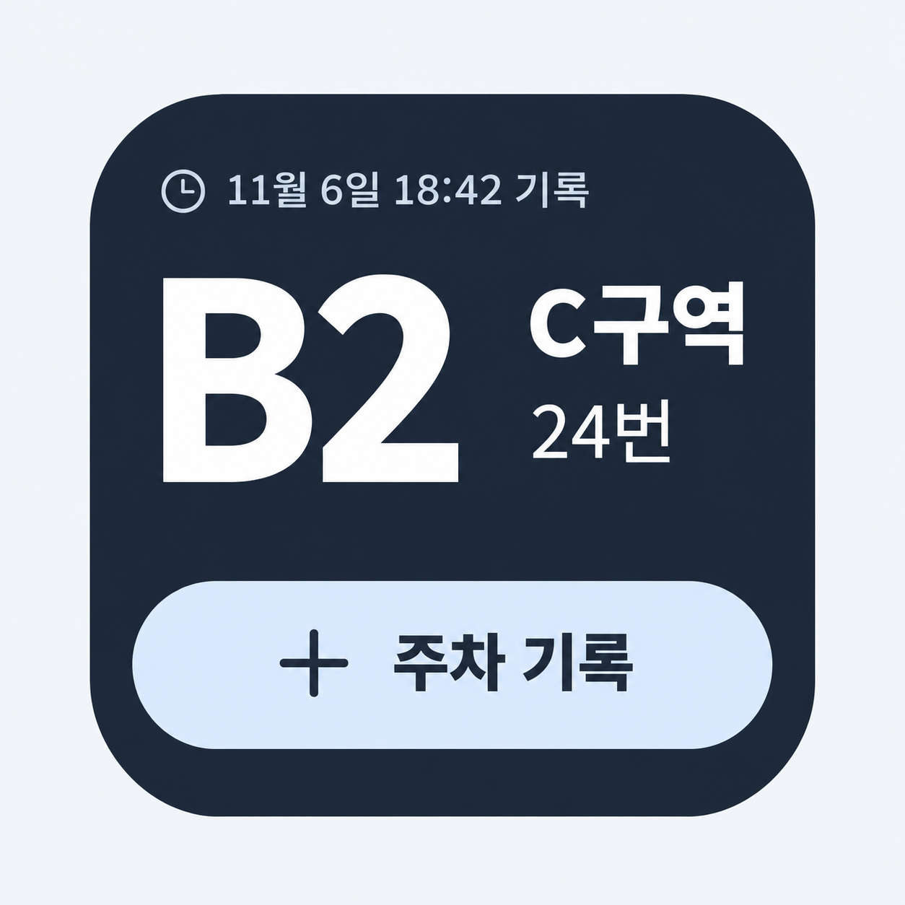
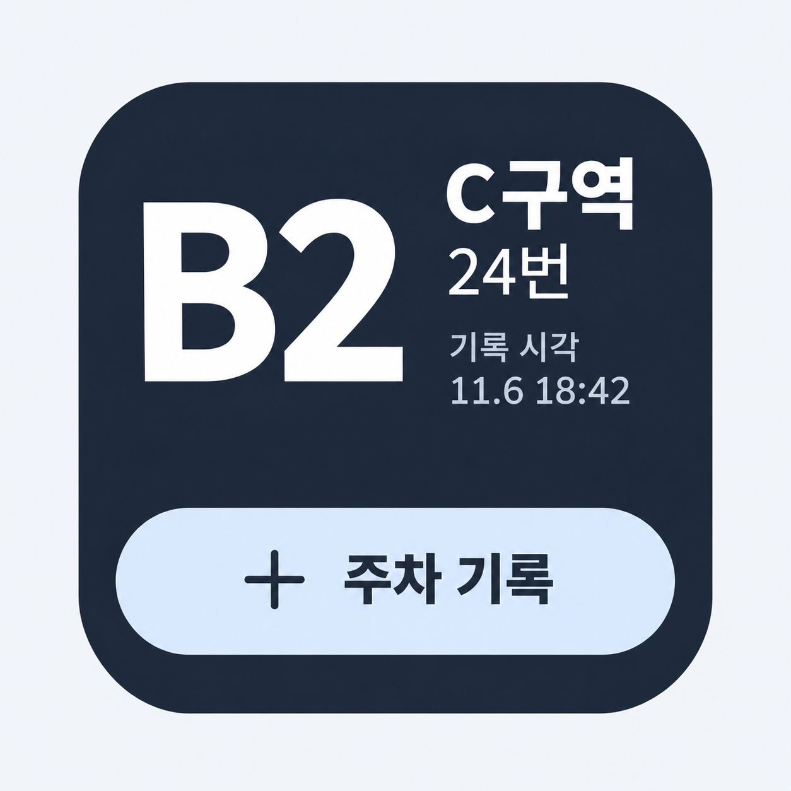
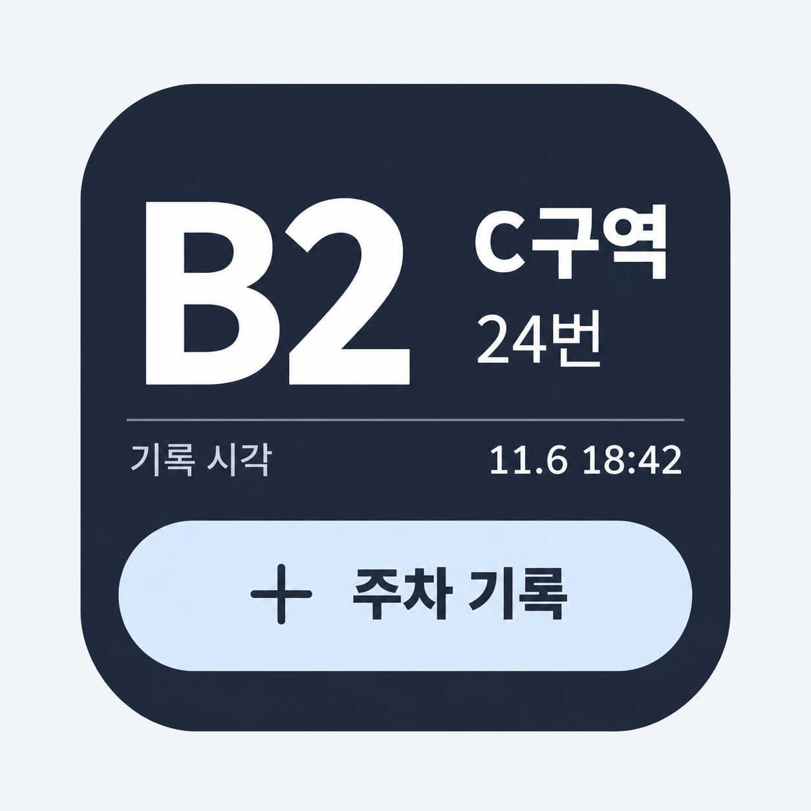
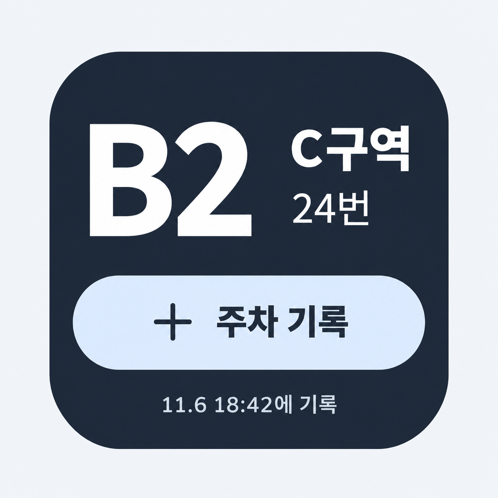

4번 위젯 · 시간 표시 비교
4번 시안의 위치 표시와 ‘주차 기록’ 버튼을 유지하고, 시간 문구와 배치를 바꿨습니다.
‘갱신’ 대신 주차 기록을 저장한 시각을 표시합니다. 이미지를 누르면 원본을 크게 볼 수 있습니다.

1상단 기록 시각
위치 위쪽에 기록 시각을 먼저 보여 줍니다.

2위치 옆 기록 시각
구역·번호 가까이에 시간을 묶어 표시합니다.

3기록 시각 구분 행
위치 아래에 이름과 시각을 나란히 놓습니다.

4하단 기록 시각
버튼 아래에 기록 시각을 작게 정리합니다.